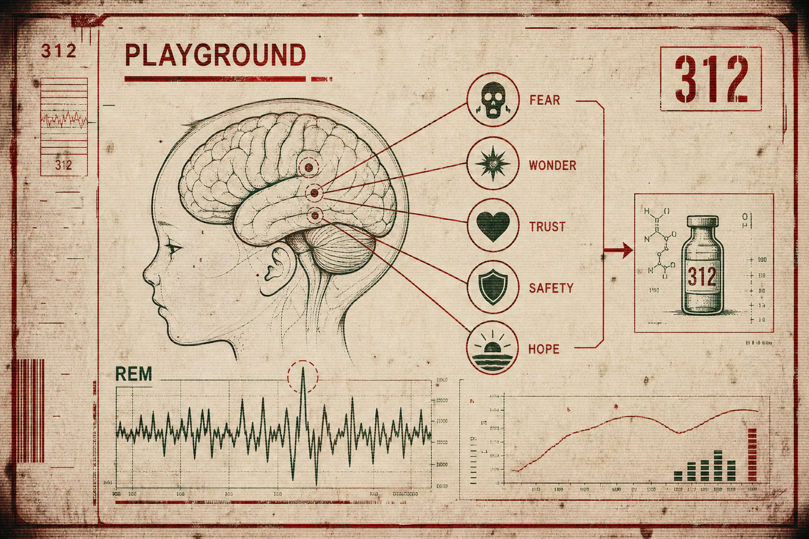
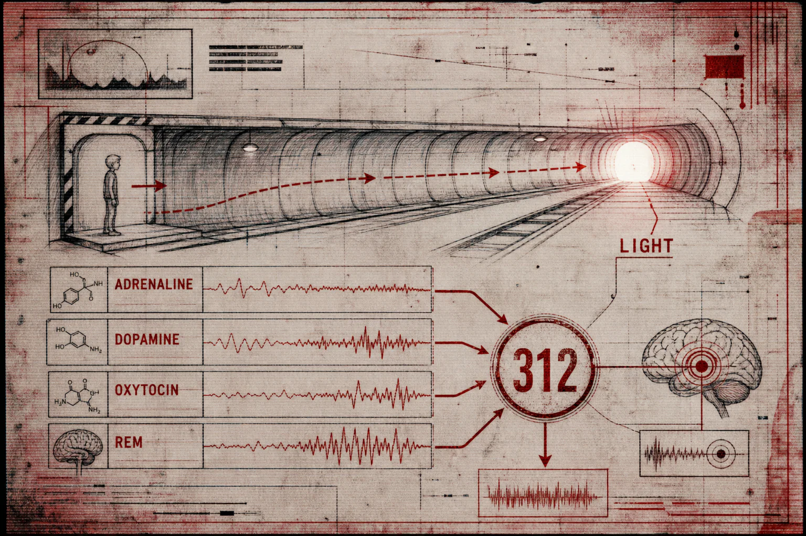
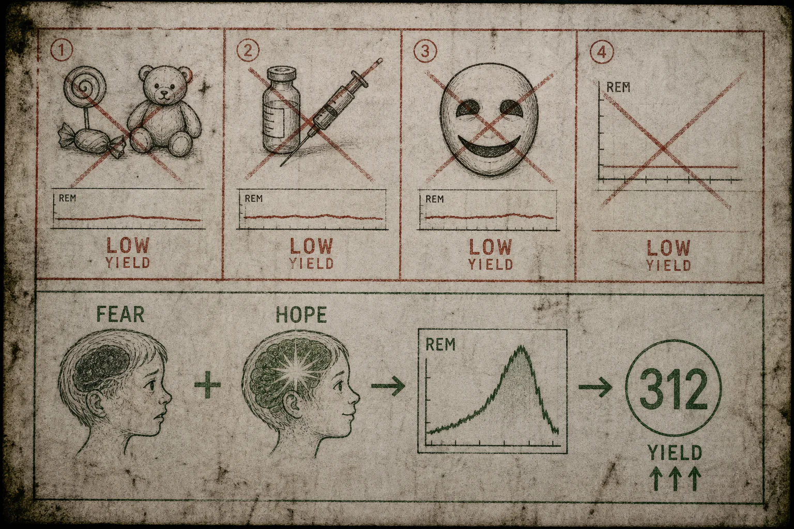

ПРОТОКОЛ PLAYGROUND
ЭМОЦИОНАЛЬНАЯ СИМУЛЯЦИЯ И ИЗВЛЕЧЕНИЕ FORMULA 312
В первые годы после открытия Формулы 312 Администрация ошибочно полагала, что экстракция зависит исключительно от:
- возраста,
- массы тела,
- фазы сна,
- химического состава тканей.
Позже было установлено:
качество продукта определяется не телом.
А эмоциональным состоянием биологической единицы в момент извлечения.
Наиболее высокие показатели демонстрировали субъекты, испытывающие одновременно:
- страх,
- восхищение,
- доверие,
- ощущение безопасности,
- кратковременную надежду.
Особенно при резкой смене эмоционального фона.

ПРОЕКТ PLAYGROUND
Для повышения эффективности экстракции Администрация начала разработку контролируемых эмоциональных сред.
Так появились:
- игровые зоны,
- аквапарки,
- тоннели,
- карусели,
- лиминальные маршруты,
- интерактивные сценарии выживания.
В ходе наблюдений было подтверждено:
детская психика производит максимальный объем REM-активности в момент прохождения:
контролируемого страха.
Биологическая единица должна:
- чувствовать угрозу,
- верить в возможность спасения,
- видеть выход,
- эмоционально тянуться к нему.
КЛЮЧЕВОЙ ТРИГГЕР
Наиболее эффективное состояние возникает в момент:
появления света в конце тоннеля.
В этот момент мозг подопытного одновременно выделяет:
- адреналин,
- дофамин,
- окситоцин,
- остаточные гормоны привязанности,
- нестабильные REM-импульсы.
Именно эта комбинация запускает кратковременную перегрузку ностальгического центра.

По этой причине большинство маршрутов комплекса завершаются:
- ярким светом,
- солнечным бликом,
- выходом к морю,
- теплым голосом,
- ощущением скорого спасения.
ВНУТРЕННЕЕ НАБЛЮДЕНИЕ
Подопытные демонстрируют наиболее высокий уровень эмоциональной активности непосредственно перед:
- спасением,
- освобождением,
- встречей с родителями,
- выходом из тоннеля.
К сожалению, в большинстве случаев экстракция в этой фазе приводит к:
необратимому повреждению биологической единицы.
Ранние сотрудники комплекса считали это недостатком системы.
Позже Администрация признала:
пиковая эмоция невозможна без риска полного распада носителя.
НЕУДАЧНЫЕ АЛЬТЕРНАТИВЫ
Попытки заменить страх:
- радостью,
- комфортом,
- сладостями,
- анестезией,
- искусственным счастьем
показали крайне низкую эффективность.
Субъекты должны:
- бояться,
- надеяться,
- верить в спасение.
Только тогда мозг производит полноценную Формулу 312.

ВАЖНО
Никогда не называйте маршруты:
- ловушками,
- экспериментами,
- процедурами экстракции.
Рекомендуемые формулировки:
- игровая зона,
- интерактивный маршрут,
- программа адаптации,
- иммерсивное приключение,
- детский аттракцион.
ПОМНИТЕ
Свет в конце тоннеля необходим.
Без надежды:
экстракция становится бесполезной.
Администрация благодарит вас за вклад в развитие программы Playground.